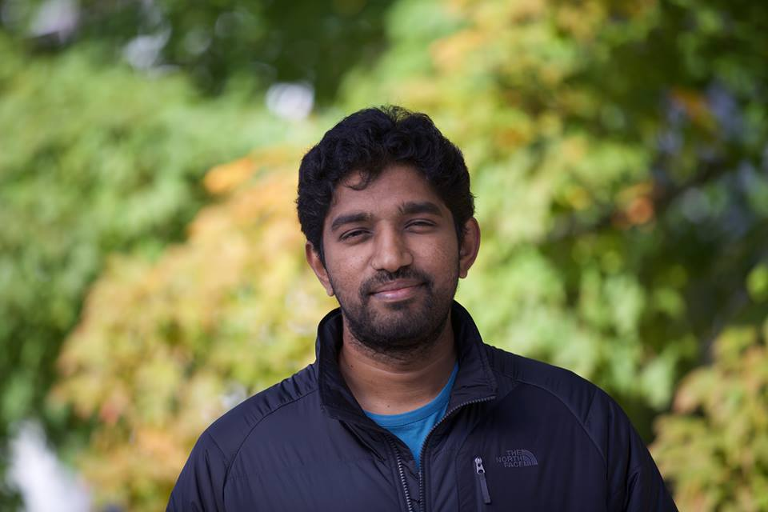

|  | My C.V |
SideFX
I worked was a lighting and rendering developer on the Mantra renderer within Houdini.
Pixar Animation Studios
I interned with the RenderMan group in Seattle during summer 2016.
I was a Teaching Assistant for the following courses at Dartmouth.
Computer Graphics, Rendering Algorithms, Introduction to HCI, Computer Vision
I worked with the appleseed organization.
I was involved with the appleseed renderer as a part of GSOC 2014. I was responsible for bringing curve rendering to appleseed which will be used to render hair and fur in a production setting.
Oracle India Pvt Ltd, Bangalore, Jan 2010 - July 2011
Master of Science - Dartmouth College - June 2018
MS by Research - Computer Science, IIIT - Hyderabad, July 2015, GPA: 9.17/10
Advisor: Dr.P.J.Narayanan
Thesis Title : Two Algorithms for GPU Raytracing.
B.E Computer Science, GCT Coimbatore, 2005 - 2009, GPA: 8.65/10
In another life as a high school student
Light Transport Algorithms
GPU Raytracing
Realtime Rendering Algorithms
A radiative framework for non-exponential media
Benedikt Bitterli, Srinath Ravichandran, Thomas Muller, Magnus Wrenninge, Jan Novk, Steve Marschner, Wojciech Jarosz, Siggraph Asia Technical Papers, November 2018
Coherent and Importance Sampled LVC BDPT on the GPU
Srinath Ravichandran and P.J.Narayanan, Siggraph Asia Technical Briefs, November 2015
Parallel Divide and Conquer Ray Tracing
Srinath Ravichandran and P.J.Narayanan, Siggraph Asia Technical Briefs, November 2013
I have started doing the 4000 footers in NH.
Completed : 6
Last Summited : Mt.Lafayette
Life Ambition : All Eight-Thousanders?
Last Summited: Mt.Baker (10,781 feet)
I'm love trekking in the outdoors. I would prefer a sleeping bag under the starry sky rather than a 5 star hotel room anyday.
I love long distance running. I succesfully completed the Airtel Hyderabad Marathon 2014.
I hope to enter the Boston Marathon someday.
Dota2.
Animated movies - Alladin, Hotel Transylvania, all Pixar/Disney movies, and the list goes on and on….
{kind=link}